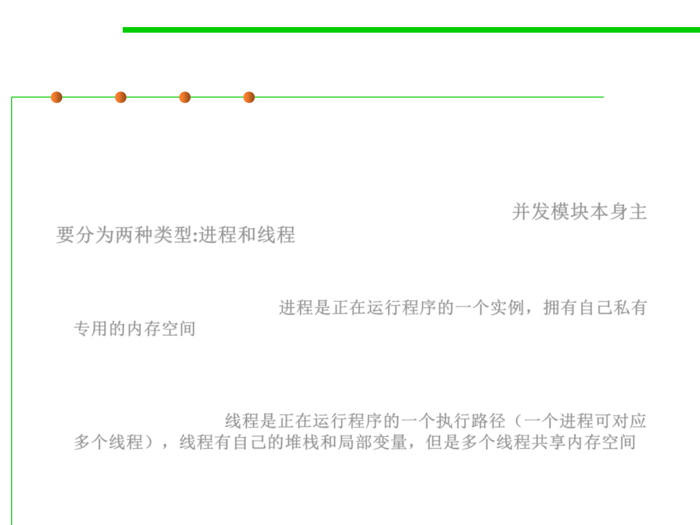

Process and Threads
10.1 Concurrency and Thread-Safety
▪ The message-passing and shared-memory models are about how
concurrent modules communicate.
▪ The concurrent modules themselves come in two different kinds:
processes and threads, two basic units of execution.并发模块本身主
要分为两种类型:进程和线程
– A process is an instance of a running program that is isolated from other
processes on the same machine. In particular, it has its own private section
of the machine’s memory. 进程是正在运行程序的一个实例，拥有自己私有
专用的内存空间
– A thread is a locus of control inside a running program. Think of it as a
place in the program that is being run, plus the stack of method calls that
led to that place (so the thread can go back up the stack when it reaches
return statements). 线程是正在运行程序的一个执行路径（一个进程可对应
多个线程），线程有自己的堆栈和局部变量，但是多个线程共享内存空间